Our Vision
To establish Thai fruits as a world-class premium standard — and to transform the way Thailand's agricultural potential is recognised and valued on the global stage.
About Us
Elevating Thai Fruits Beyond Commodities
Siam Fresh Enterprise was founded on a simple belief: Thailand produces some of the world's finest tropical fruits, and those fruits deserve to be recognised for their true value.
For over 22 years, Siam Fresh has worked at the intersection of Thailand’s agricultural heritage and international trade, elevating Thai tropical fruits from fresh produce into premium products with true global value.
By working closely with growers across Thailand’s key producing regions, maintaining internationally recognised certifications, and serving buyers across Asia, Europe, and beyond, we deliver consistent quality that discerning markets can trust.
Today, we continue to refine our standards, enhance our operations, and connect Thailand’s finest orchards with global markets — creating lasting value for our customers, growers, and the communities behind every harvest.
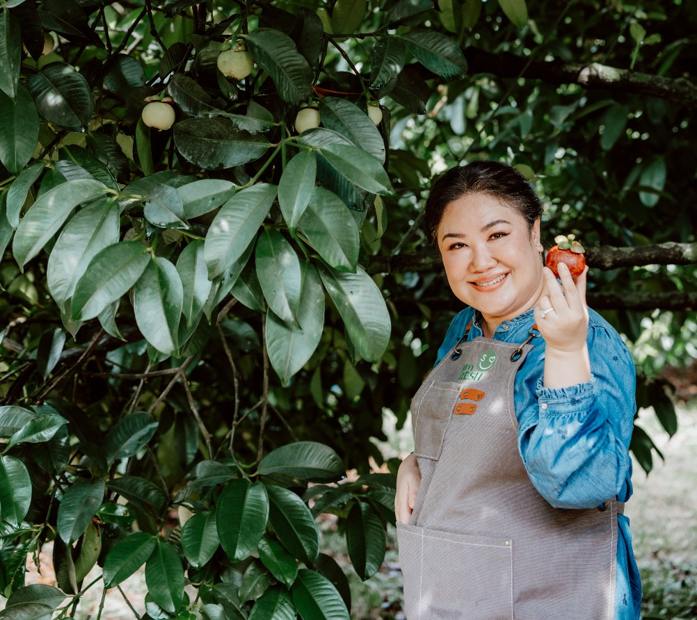
Serving customers across Asia, Europe, and beyond through trusted export partnerships.
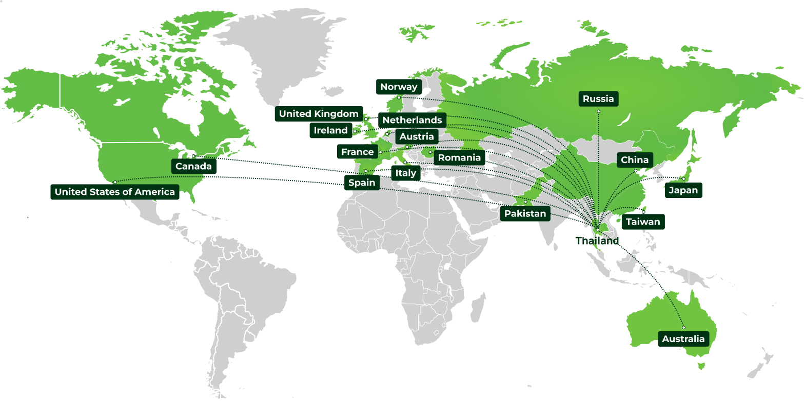
To establish Thai fruits as a world-class premium standard — and to transform the way Thailand's agricultural potential is recognised and valued on the global stage.
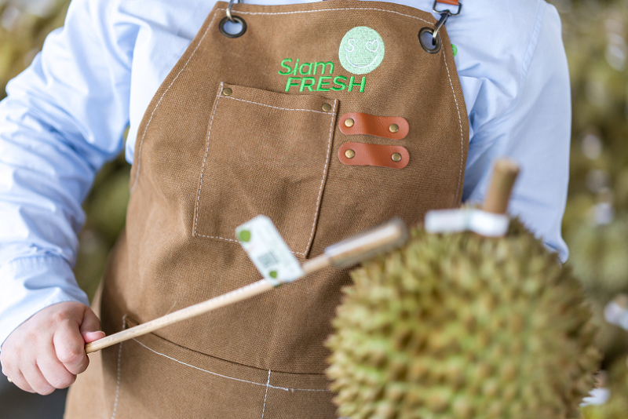
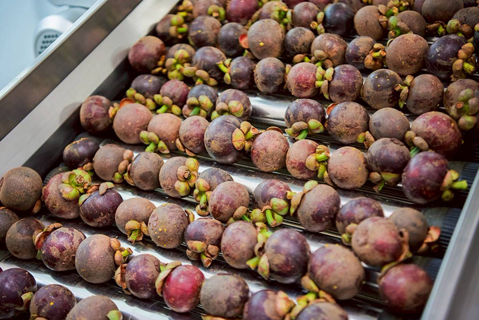
To deliver uncompromising quality fruit, support farmers, and build supply chains that create lasting value for customers, communities, and the environment.
We are committed to delivering safe, reliable, and premium-quality Thai fruits through internationally recognised standards, full traceability, and continuous quality control — from orchard to export.
Internationally recognised certifications across every stage of our supply chain.
Continuous monitoring for food safety, traceability, and export compliance.
Enables complete product traceability from orchard to shipment for transparency and accountability.
Regular testing and monitoring to ensure compliance with international residue standards and importing country requirements.
Recognised by leading national institutions for excellence in export performance, entrepreneurship, innovation, and sustainable business growth.
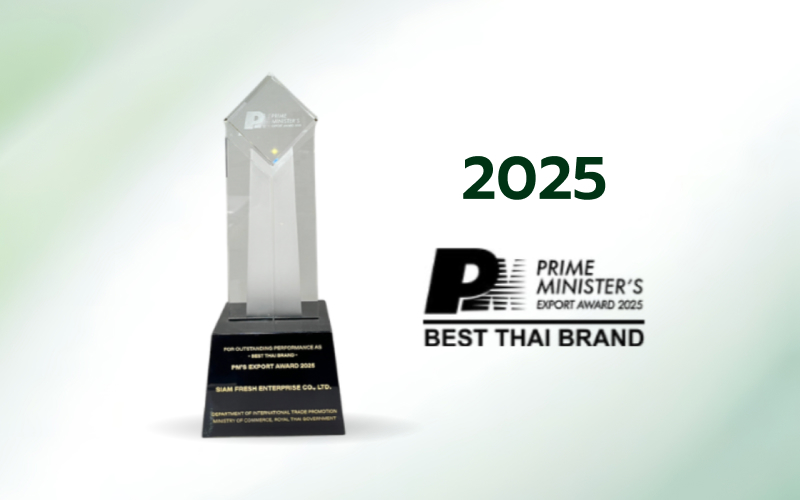
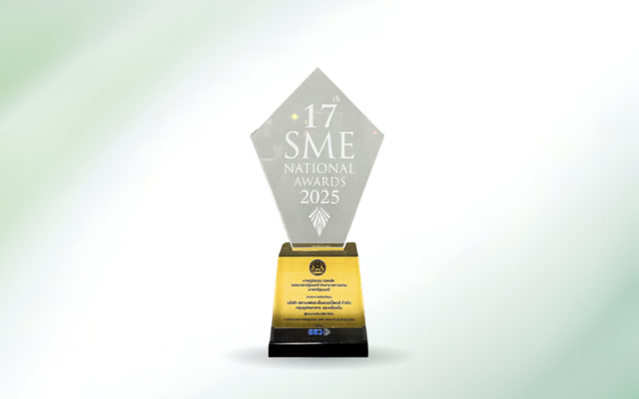
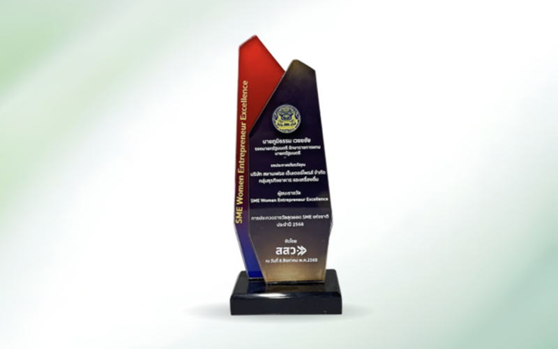
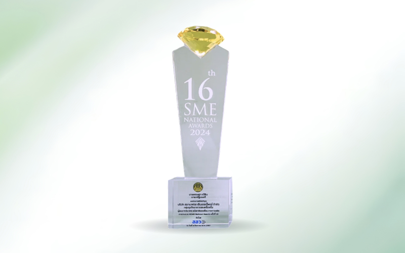
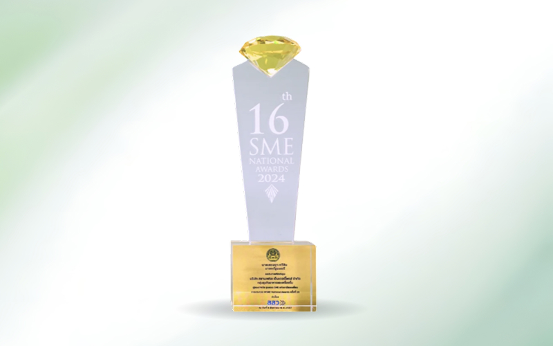
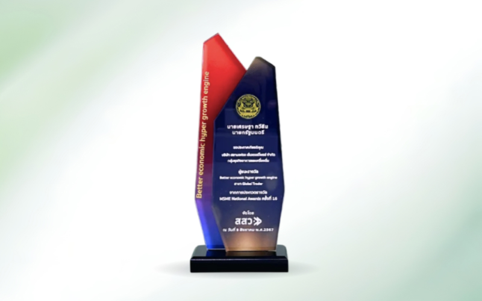
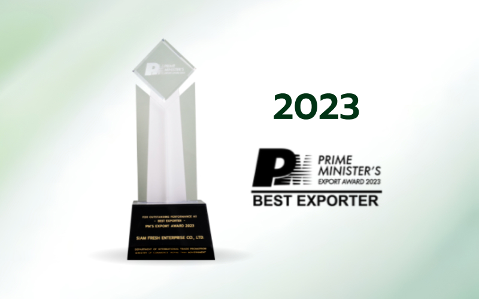
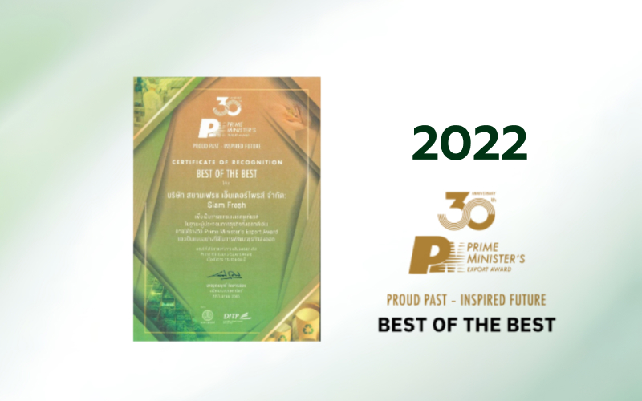
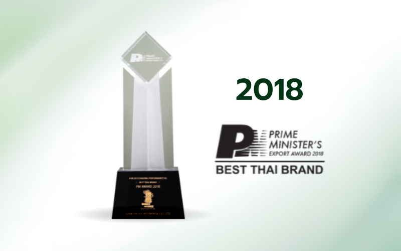
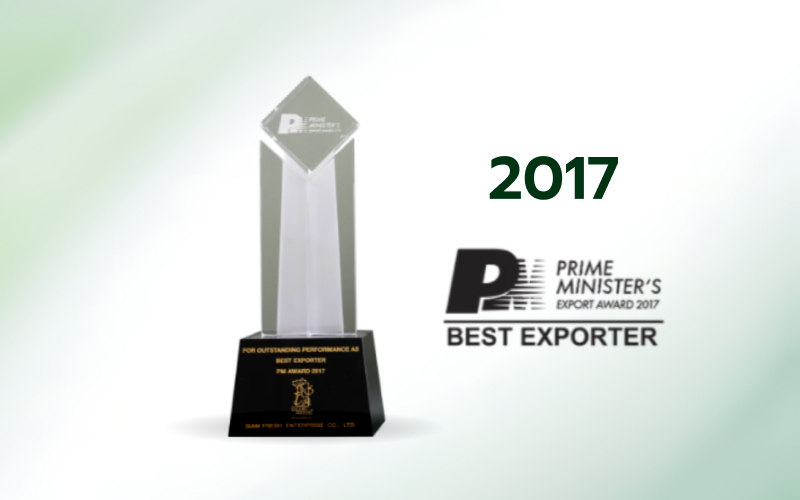
At Siam Fresh, sustainability is integrated into every aspect of our business.
We are committed to balancing responsible growth, social responsibility, and environmental stewardship while delivering premium Thai fruits to global markets.
Promoting responsible farming practices through certified farms, resource management, and continuous improvement.
Supporting farming communities through fair partnerships, knowledge sharing, and long-term opportunities.
Reducing environmental impact through responsible packaging, efficient resource use, and sustainable logistics.
Leveraging technology and traceability systems to improve transparency, efficiency, and customer confidence.
Siam Fresh proudly brings the finest of Thailand to customers worldwide creating lasting value through every harvest, every partnership, and every shipment.
View Our Products